1. 先建立直觉：嵌套查询像函数调用
SQL 允许在很多地方写子查询：SELECT、FROM、WHERE、HAVING、ORDER BY 等。理解优化的第一步，是区分子查询是否引用了外层查询的列。
非相关子查询
子查询不引用外层列。逻辑上只要算一次，然后把结果复用给外层每一行。
SELECT name
FROM students
WHERE score = (
SELECT MAX(score) FROM students
);相关子查询
子查询引用外层列。逻辑上外层每来一行，内层结果都可能不同。
SELECT name, major
FROM students AS s1
WHERE score = (
SELECT MAX(s2.score)
FROM students AS s2
WHERE s2.major = s1.major
);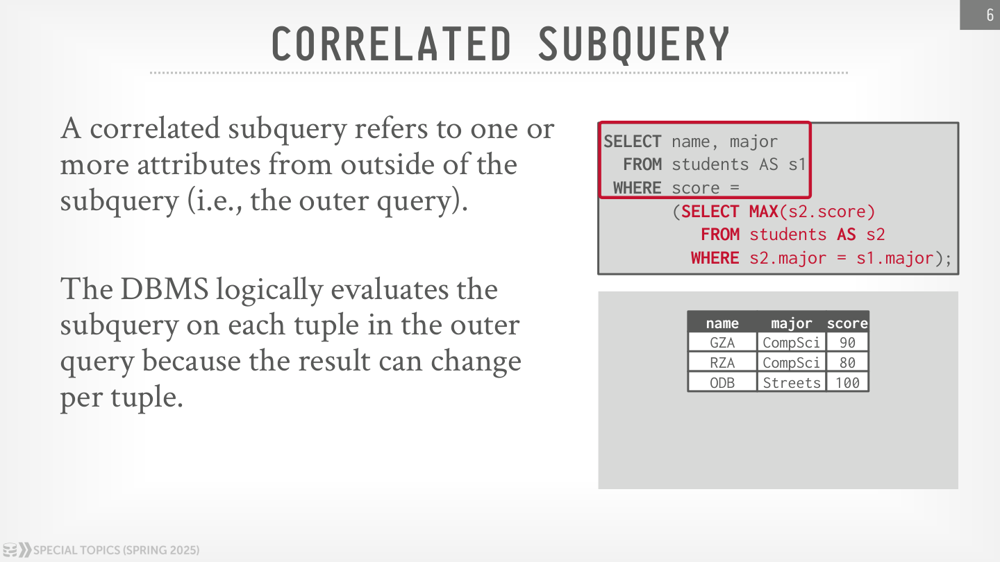
s2.major = s1.major 引用了外层的 s1.major，所以每个外层专业都可能得到不同的 MAX(score)。可以把相关子查询想成一个函数：subquery(s1.major)。优化器的问题是：我们真的要对外层每一行调用一次这个函数吗？如果外层有一百万行，内层表也很大，这个写法会把声明式 SQL 悄悄变成近似嵌套循环。
2. 优化器眼里的相关子查询：Dependent Join
PPT 这一段的讲法很适合初学者：先不要急着看 2015 论文的代数公式，而是先看优化器如何把 SQL 里的 SUBQUERY 节点变成一个显式的逻辑算子。这个算子就是 dependent join。
这一节沿用的示范 SQL 是在学生表里找“每个专业中分数最高的学生”；内层子查询负责算当前外层学生所属专业的最高分。
2.1 从 SUBQUERY 节点到 LHS/RHS
还是用按专业找最高分的例子。SQL 里看起来只是 WHERE score = (SELECT ...)，但在逻辑计划里，外层 students AS s1 和内层 students AS s2 被拆成两边：
- LHS：Left-Hand Side，左侧输入，也就是外层扫描
students s1。 - RHS：Right-Hand Side，右侧输入，也就是内层子查询的扫描、过滤和聚合。
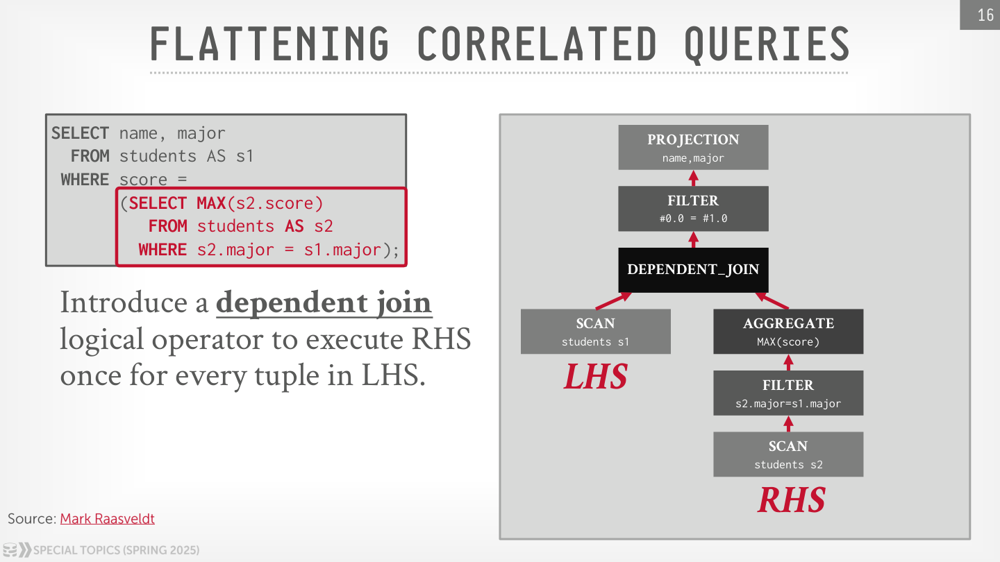
SUBQUERY 被展开成 DEPENDENT_JOIN。RHS 中的过滤条件 s2.major = s1.major 读取了 LHS 的 s1.major。这里“依赖”的含义非常具体：RHS 不是一个可以提前独立算完的子计划。它里面有一个外层列 s1.major，必须等 LHS 当前行给出 major 的值，RHS 才知道自己要筛哪些 s2 行。
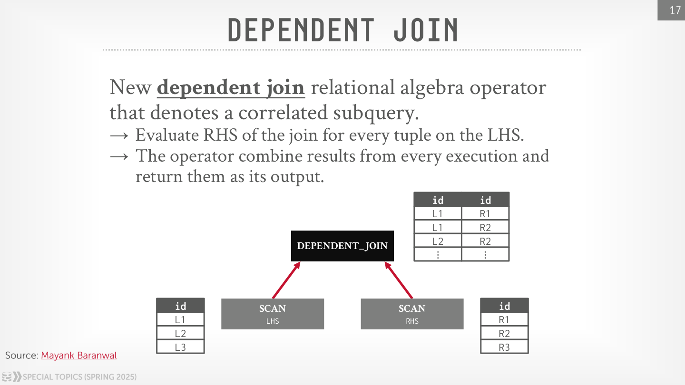
2.2 为什么要引入去重绑定域 D？
如果直接按 dependent join 执行，外层 students s1 每来一行，RHS 都要重新算一次 MAX(score)。但这个例子里 RHS 真正需要的外层信息只有 s1.major。如果有很多学生同属 CompSci，为每个学生重复计算 CompSci 的最高分就是浪费。
PPT 的下一步是引入 DUP_ELIM_SCAN，也就是从 LHS 抽取相关列并去重，形成绑定域 D。在这个例子里，D 更准确地说是一张只有绑定列的临时关系：D(d.major) = DISTINCT SELECT s1.major FROM students AS s1。
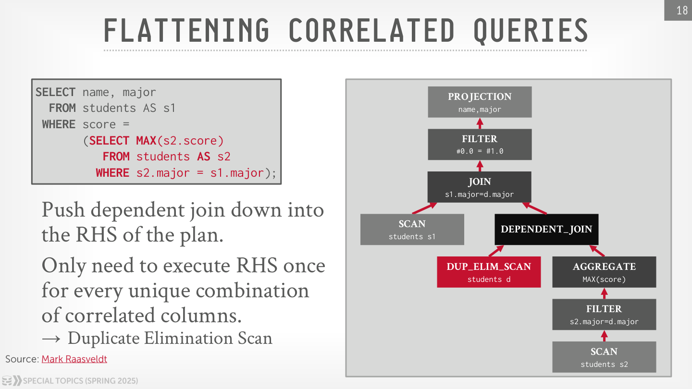
DUP_ELIM_SCAN students d 得到去重绑定域，再通过 s1.major = d.major 把这些绑定值接回外层。这一步把“每个学生执行一次 RHS”改成“每个不同专业执行一次 RHS”。绑定仍然存在，但绑定对象从外层每一行缩小为去重后的相关列组合；后续 RHS 不再直接引用外层的 s1.major，而是用 d.major 作为普通输入列，和内层扫描出来的 s2.major 做连接或过滤。
2.3 把 dependent join 往 RHS 里面推
有了 D 以后，优化器继续把 dependent join 往 RHS 子树深处推。它经过 filter，再经过 aggregate。经过 aggregate 时必须把绑定列加入分组键：否则 MAX(score) 会变成全表一个最大值，而不是每个 d.major 一个最大值。
理由是：下推之前，RHS 是“带着一个绑定值执行一次”。当 d.major = 'CompSci' 时，内层只看 CompSci 的行；当 d.major = 'Streets' 时，内层只看 Streets 的行。下推之后，优化器想把这些执行合并成一次关系计算，于是同一张中间关系里会同时出现多个绑定值的行。如果聚合仍然没有分组键，MAX(score) 就会把所有绑定值的行混在一起，只产出一个全局最大分数。
| 绑定值 | RHS 应该看到的行 | 正确结果 |
|---|---|---|
d.major = 'CompSci' |
CompSci 学生的分数，例如 90, 80 |
MAX = 90 |
d.major = 'Streets' |
Streets 学生的分数，例如 100 |
MAX = 100 |
所以聚合必须从“算一个 MAX(score)”变成“按 d.major 分组分别算 MAX(score)”。这不是性能细节，而是保持相关子查询语义的必要条件：原来每个绑定值各自执行一次，现在合并执行时也必须保留“每个绑定值一个结果”的边界。
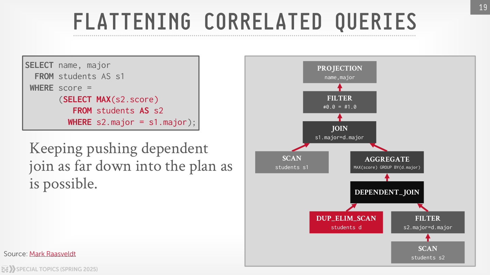
MAX(score) GROUP BY(d.major)，保证每个绑定值独立计算。这正是后面 2015 论文里 D ⧑ ΓA;agg(T) → ΓA∪A(D);agg(D ⧑ T) 的直觉版：如果内层聚合依赖外层值，就要按外层绑定值分组计算。
2.4 到底后，把 dependent join 改成普通 join
dependent join 被一直推到 RHS 足够底部之后，RHS 不再需要“当前外层行”这个上下文。此时它可以先变成 cross join，再由过滤条件 d.major = s2.major 变成普通 inner join。
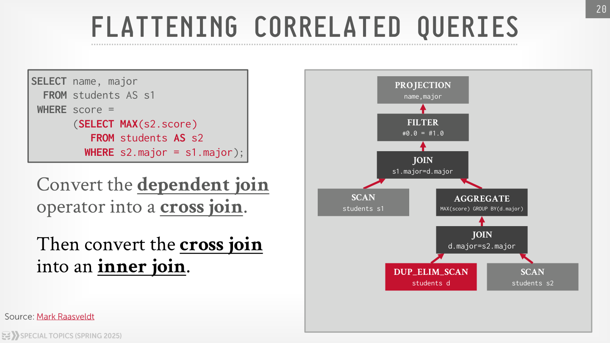
d.major = s2.major。2.5 最后删除冗余 D，得到手写 join 形状
在这个例子里，d.major 最终和 s2.major 等值绑定，优化器还可以进一步删除 DUP_ELIM_SCAN 和上方多余过滤，让计划变成更熟悉的“先按专业聚合，再和外层学生表 join”的形状。
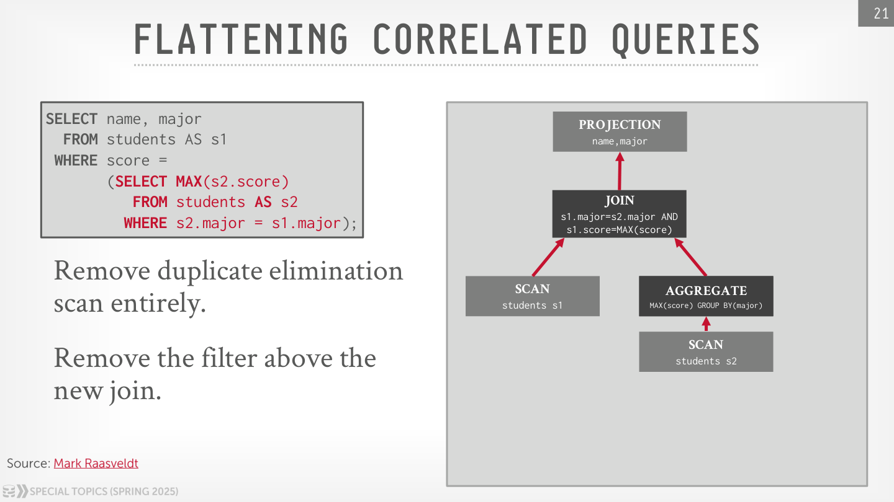
这里有两个术语可以回头再记：
- 自由变量：内层表达式使用但自己不能产生的列。例如
s1.major出现在内层students AS s2的过滤条件里，它来自外层。 - 绑定域 D：外层真正需要传给内层的不同取值集合。例如按专业求最高分时，内层只需要不同的
major，不需要外层每个学生行。
优化目标
把“每个外层 tuple 触发一次内层求值”改成“为每个必要的绑定值集合求一次内层结果，然后用普通 join 接回外层”。这就是 decorrelation / unnesting 的核心。
2.6 这几步分别为什么成立？
| PPT 步骤 | 计划改动 | 为什么语义不变 | 为什么更适合优化 |
|---|---|---|---|
展开 SUBQUERY |
把内层子查询表示成 DEPENDENT_JOIN 的 RHS。 |
RHS 仍然能读取 LHS 当前行的 s1.major，等价于原 SQL 中内层引用外层列。 |
相关性从 SQL 语法现象变成显式逻辑算子，后续规则可以在代数树上工作。 |
引入绑定域 D |
从 LHS 抽取并去重相关列，得到 D(d.major)，再用 s1.major = d.major 接回 LHS。 |
RHS 的结果只取决于 major，同一个 major 的多行外层 tuple 会得到同一个内层聚合结果。 |
把“按外层每行执行”降为“按不同绑定值执行”，避免重复计算。 |
| 下推穿过 filter | 把 dependent join 推到 s2.major = d.major 这个过滤条件下面或旁边。 |
过滤条件仍然使用同一个绑定值 d.major 来选择 RHS 行，只是绑定值变成了普通输入列。 |
相关谓词开始变成普通关系条件，为后续 join 化做准备。 |
| 下推穿过 aggregate | 把聚合改成 MAX(score) GROUP BY(d.major)。 |
原语义是每个绑定值单独执行一次 RHS；分组键保留了这个“每个绑定值一个聚合结果”的边界。 | 多个绑定值可以在一次扫描/聚合中同时计算，而不会混成一个全局聚合。 |
| 转成普通 join | 当 RHS 不再读取 LHS 当前行时，把 dependent join 变成 cross join，再把 d.major = s2.major 变成 inner join 条件。 |
RHS 所需的绑定列已经由 D 提供，不再需要逐行调用上下文。 |
普通 join 可以使用 hash join、join reorder 等成熟优化能力。 |
删除冗余 D |
在 d.major 可由 s2.major 等值替代时，移除 DUP_ELIM_SCAN 和多余过滤。 |
最终 join 仍会用 s1.major = s2.major 和 s1.score = MAX(score) 保证结果匹配。 |
计划回到更简洁的 join + group by 形状，少一个中间绑定域。 |
3. 2015：任意查询的代数级 Unnesting
前一节已经用教学 PPT 把 students 例子的执行形状讲完了：相关子查询先变成 dependent join，再引入绑定域 D，下推到 RHS，最后转成普通 join。因此这一节不再重复同一个 SQL 例子，而是看 2015 论文把这套直觉推广成了什么。
3.1 PPT 之后，论文新增了什么？
| 前面 PPT 已经说明 | 2015 论文进一步给出 |
|---|---|
| 一个具体相关聚合子查询可以被拉平成 join + group by。 | 任意相关子查询都可以先表达成 dependent join，再用代数规则消除。 |
DUP_ELIM_SCAN 表示只按不同绑定值执行 RHS。 |
D := ΠF(T2)∩A(T1)(T1) 精确定义了绑定域来自哪些外层列。 |
| 下推经过聚合时要把绑定列加入 group by。 | 给出 selection、join、group by、projection、set operation 等通用下推等价式。 |
最后有些情况下可以删除 D。 |
说明删除 D 依赖等价类/替换，并且是成本选择，不是永远更好。 |
所以，2015 论文的重点不是“又举了一个能改写的 SQL”，而是把 PPT 中的动画步骤抽象成优化器可以机械应用的一组关系代数规则。
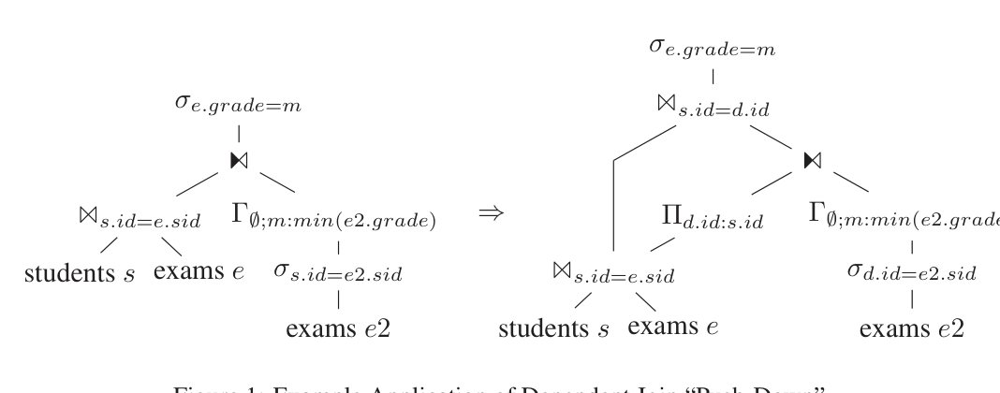
D 送进内层子树”这个通用形状，而不是 SQL 表名本身。3.2 核心等价式：先造 D，再下推 D
2015 算法最关键的一步，是把原来的 dependent join 拆成两个部分：一个普通 join 加一个以去重绑定域驱动的新 dependent join。
T1 ⧑p T2 ≡ T1 ⋈(p ∧ T1=A(D)D) (D ⧑ T2)，其中 D := ΠF(T2)∩A(T1)(T1)这里的 T1=A(D)D 表示普通 join 需要把外层原列和投影/重命名后的 D 列对应起来，不是随便做一个自然连接。比如论文的等值聚合示例把 s.id 投影成 d.id，接回外层时要用 s.id = d.id。
这句话可以翻译成新手版：
- 先从外层
T1取出内层T2真正引用的外层列。 - 对这些列去重，得到绑定域
D。 - 让内层只为每个
D值算一次。 - 再用普通 join 把结果接回原来的外层行。
为什么 D 必须去重？
论文后续下推规则依赖 D 是集合而不是 SQL bag。去重只发生在绑定域上，不表示整个查询丢掉了 SQL 多重集语义中的重复行。
3.3 下推规则的直觉
有了 D，算法把 D ⧑ T 一路往右侧子树下推。遇到不同算子时做相应改写：
| 遇到的算子 | 直觉 | 典型改写 |
|---|---|---|
Selection σ |
先把 dependent join 推到过滤输入，再保留过滤条件。 | D ⧑ σp(T) → σp(D ⧑ T) |
| Join | 如果依赖只在一侧，就推到那侧；如果两侧都依赖，就复制到两侧并用 D 的列对齐。 |
必要时变成 (D ⧑ T1) ⋈naturalD (D ⧑ T2) |
| Group By | 内层聚合必须按绑定值分别算，所以把 D 的列加入分组键。 |
D ⧑ ΓA;agg(T) → ΓA∪A(D);agg(D ⧑ T) |
| Base table | 表扫描本身不需要外层列，dependent join 到这里就可以变成普通 join。 | D ⧑ R → D ⋈ R |
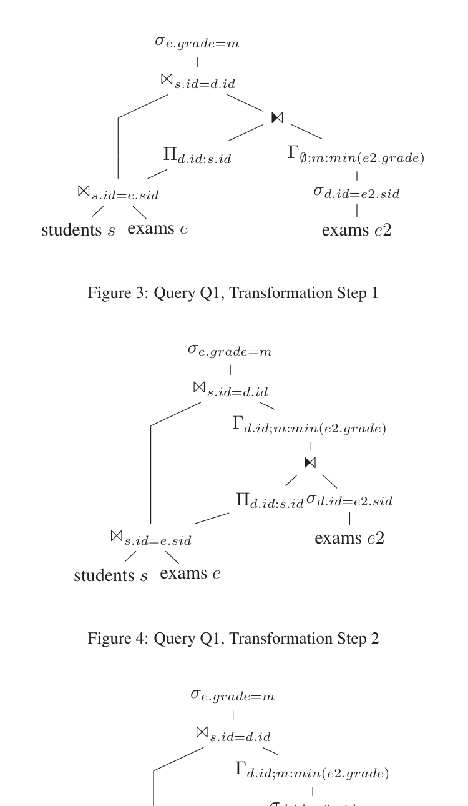
D，以及把 D 加进聚合分组键。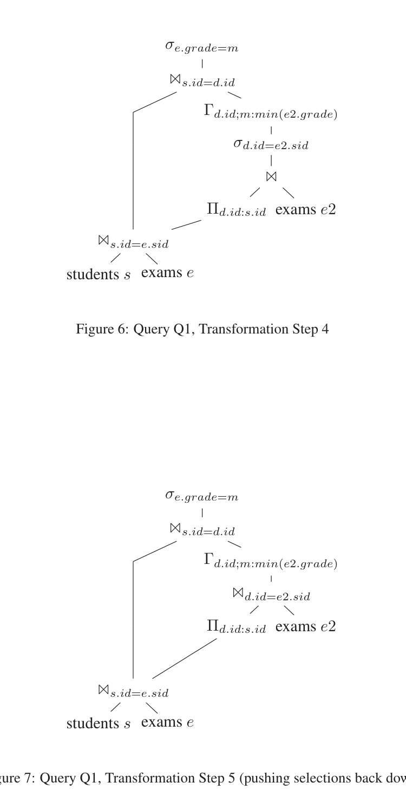
3.4 什么时候可以把 D 整个消掉？
有时 D 的列和内层已有列通过等值条件绑定。在论文的等值聚合示例中，d.id = e2.sid，所以可以用 map/substitution 把 d.id 替换成 e2.sid，让计划看起来完全像普通手写 join。
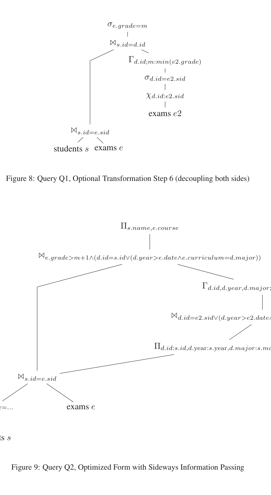
D；下半部分 Figure 9 展示更复杂 Q2 中 D 不能完全消除。但论文强调：替换不总是更快。消掉 D 的 join 会丢掉早期过滤能力，可能制造更大的中间结果。最终要不要替换，应交给成本模型。
3.5 更复杂的 Q2：非等值条件让 D 留在计划里
Q2 计算“学生某门考试是否比自己或高年级同专业学生的平均成绩差一档以上”。它的相关条件包含 OR、s.year > e2.date 这类非等值比较。这里无法简单用内层已有列替代外层 s.year、s.major，因此 D 作为 sideways information passing 保留下来。
2015 的贡献一句话
把“相关子查询消除”从一堆特殊 SQL 重写规则，提升为一套代数级、可覆盖任意嵌套形状的 dependent join 消除方法。
4. 2025：Holistic Query Unnesting
这一节按 2025 论文 Improving Unnesting of Complex Queries 的讲述顺序来读。论文不是重新发明 dependent join，而是在 2015 算法已经被多个系统采用之后，指出两个缺口：复杂 SQL 构造还没有被系统覆盖；多层相关子查询按 bottom-up 逐个消除时，也可能生成很大的中间 cross product。
4.1 Introduction：声明式 SQL 在复杂子查询处失效
论文开头先提醒读者：SQL 的承诺是声明式，用户只写“想要什么”，系统负责找执行策略。但复杂相关子查询会让这个承诺失效。Figure 1 的查询要找 automobile market 的客户，并且这些客户有超过 5 个订单的收入超过 300000。SQL 文本不复杂，但规范翻译成关系代数后，右侧会出现嵌套 dependent join：RHS 必须读取 LHS 当前 tuple 的列。
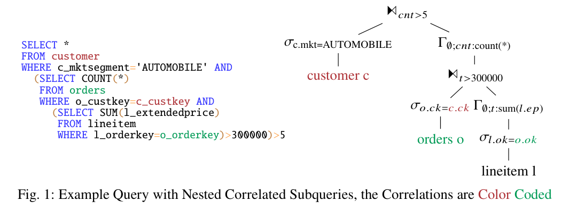
作者接着说明，dependent join 的问题是算法复杂度。普通 hash join 可以先独立计算两边，而 dependent join 的 RHS 要对 LHS 的每个 tuple 求值，复杂度随两边规模相乘增长。论文给出一个具体事实：在 TPC-H scale factor 1 上，这个 1GB 数据量的查询在 PostgreSQL 16 上会运行超过 25 分钟；如果人工改写成去相关形式，则可以很快完成。论文的立场是：这种改写应该由 DBMS 自动完成，而不是要求用户手写更长、更难读的 SQL。
接下来，作者回顾历史：早期系统用 SQL 模式识别和重写来处理一些相关子查询，但这种方法对 SQL 文本形状很敏感。2015 的工作改用代数级算法，核心是两个观察：只需要为外层自由变量的不同绑定值执行内层查询；当绑定域 D 去重以后，dependent join 可以沿代数树下推直到消失。2025 论文要补的，是这个算法在深层嵌套和复杂 SQL 构造上的不足。
4.2 Background：先复述 2015 的 bottom-up 算法
论文第 2 节先把问题重新形式化。关系代数表达式 T 产生的列记为 A(T)，表达式中使用但当前输入不能产生的列记为自由变量 F(T)。如果 F(T) 非空，表达式不能单独求值，必须由上方 dependent join 绑定这些列。
A(L) ∩ F(R) = ∅，则 L ⧑ R 可以直接替换成普通 join L ⋈ R。
然后作者按 2015 算法解释 bottom-up unnesting。第一步总是尝试 simple unnesting：有些 dependent join 只是 SQL 语法翻译造成的。例如 EXISTS 子查询里有 R.x = S.y，优化器可以把这个条件拉到 semi join 上，依赖就消失了。
如果 simple unnesting 不够，就使用通用策略：为 RHS 所需的外层列构造绑定域 D，并把原 dependent join 改写成外层与 D 的普通连接，再让 D 去驱动 RHS。
D := ΠA(L)∩F(R)(L)
L ⧑ R ≡ L ⋈natural D (D ⧑ R)
这个变换有两个作用。第一，|D| ≤ |L|，所以内层查询只需要按不同绑定值求值。第二，D 是 duplicate free 的，后面的下推规则依赖这个性质。算法会把 D ⧑ ... 穿过 selection、join、group by 等算子；遇到 group by 时，把 D 的列加入分组键；到达叶子后 dependent join 变成普通 join。
最后，优化器可以选择是否把 D 整个消掉。如果 D 的列都被等值条件绑定，例如 x = y，就可以用替换 χx:y 让 x 由 y 计算出来。论文也强调这只是成本选择：删掉 D 会让计划更像普通查询，但如果 D 的 join 很有选择性，保留它可能更快。
4.3 Limitations：bottom-up 嵌套时会放大绑定域
论文第 2.3 节指出，bottom-up 方法通常可以工作，但在某些角落情况会退化。作者最初是从 Sam Arch 那里注意到这个问题：复杂 UDF 被翻译成纯 SQL 后，可能产生类似 Figure 1 的多层相关子查询。论文把这个情况压缩成下面的代数树，并为了用小例子触发问题，额外加入相关条件 T3.a = T1.a。
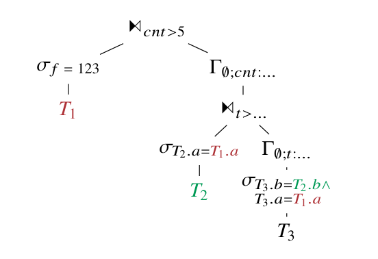
T2.b 和更外层的 T1.a。bottom-up 算法先消除较低的 dependent join。处理后，优化器很可能保留 ΠT2.b(σT2.a=T1.a(T2)) 这段计算，而不是把 T1.a 替换成 T2.a，因为 T2.a = T1.a 可能是有选择性的过滤条件。
问题出现在第二次运行算法、继续消除最上层 dependent join 时。此时 lower join 的 RHS 概念上会在 T1.a 的域与 T2.b 的域的完整组合上求值，而不是只在 T1 与 T2 真正 join 后的绑定域上求值。
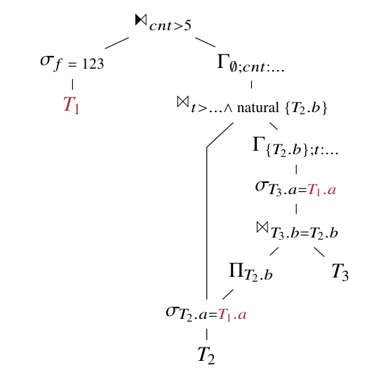
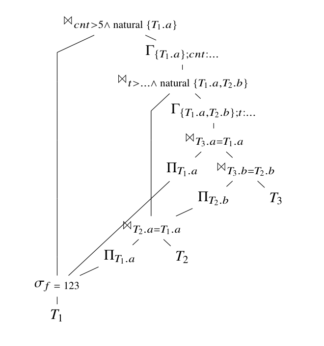
Γ{T1.a,T2.b};t:... 会处理过大的绑定组合。作者强调，结果仍然正确：后续 join 条件会删除不满足 T2.a = T1.a 的 T1.a 取值。但 group by 已经处理了太多组合。嵌套越深，这个问题越严重；Sam Arch 提供的 crash.sql 包含六层嵌套 join，旧策略会制造很大的中间 cross product，之后再被过滤消掉，却已经消耗了内存和 CPU。
4.4 Holistic Query Unnesting：新算法的三部分
论文第 3 节正式提出 holistic unnesting。作者把它看作 2015 算法的 top-down 变体：仍然使用“把自由变量绑定域 D 下推”的思想，但不再真的把每个 D 立刻穿过整棵树。新算法记住哪些 D 需要被加入，在一次自顶向下的遍历里重写算子，直到 D 不再需要，或者可以安全加入。
论文把算法拆成三部分：
- 预处理阶段：找出所有非平凡 dependent join，并标注主算法需要的信息。
- 主算法：按 top-to-bottom 顺序消除 dependent join；如果遇到嵌套 dependent join，通常在消除祖先 join 时一并处理，但如果祖先 unnesting 在抵达后代前停止，后代 join 会在后续顺序中处理。
- 算子规则：分别说明 selection、map、group by、window、join 等算子如何在 unnesting 中被改写。
4.5 Identifying Non-Trivial Dependent Joins：标注 accessing
第一步是识别非平凡 dependent join，也就是 RHS 真的访问了 LHS 提供列的 dependent join。论文建议使用 indexed algebra：对每个列访问，找到“访问该列的算子”和“产生该列的算子”的 lowest common ancestor。如果这个 LCA 不是访问算子本身，它必须是某个 dependent join，于是把访问算子记录进这个 dependent join 的 accessing 集合。没有访问算子的 dependent join 是平凡的，可以直接转成普通 join。
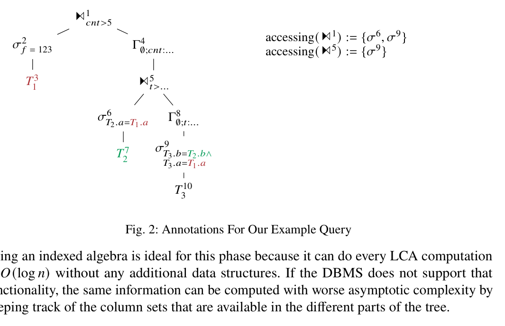
accessing(⧑1) = {σ6, σ9}，accessing(⧑5) = {σ9}。这一步的意义是让算法知道“到底哪些算子在读外层列”。后续 unnesting 不再盲目把每个绑定域穿过所有位置，而是沿着 accessing 指出的路径推进。
4.6 Eliminating Dependent Joins：先 simple，再 full
标注完成后，算法按从根到叶的顺序处理 dependent join。论文先给出 simple dependent join elimination：如果访问算子到 dependent join 的路径是线性的，并且访问算子是 selection 或可上移的 map，就把它合并到 join 或移动到 join 上方；如果 accessing 变空，就把 dependent join 转成普通 join。
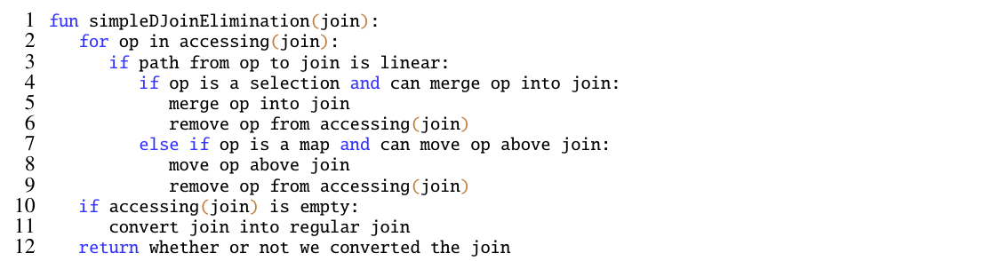
如果 simple unnesting 不够，就进入完整算法。论文把状态分成两层：UnnestingInfo 是整个 unnesting 过程中不变的信息，Unnesting 是当前查询片段里的局部状态。
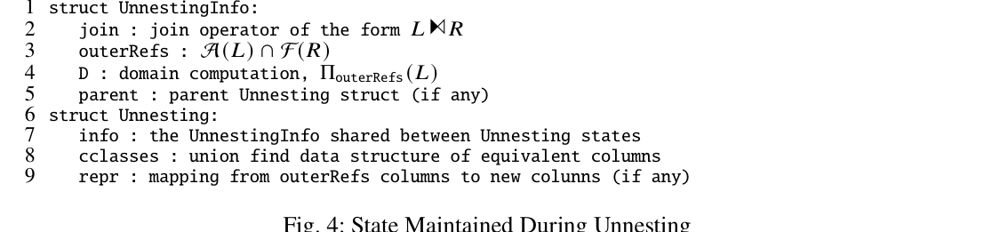
join、outerRefs、D、parent 属于全局信息；cclasses 和 repr 属于局部状态。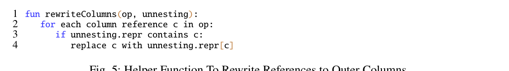
repr 中记录了外层列的新代表列，就把算子里的列引用改写过去。| 状态 | 论文中的含义 | 为什么需要 |
|---|---|---|
outerRefs |
A(L) ∩ F(R)，RHS 访问的 LHS 列。 |
决定绑定域 D 需要包含哪些列。 |
D |
ΠouterRefs(L)，外层引用的去重绑定域。 |
当不能替换外层列时，用它显式 join 进来。 |
parent |
当前 unnesting 若发生在另一个 unnesting 之内，记录父状态。 | 识别嵌套 dependent join，并把父层访问合并进当前处理。 |
cclasses |
用 union-find 维护等价列，例如 a=b、b=c。 |
允许通过传递等价关系找到可替代 outer reference 的内层列。 |
repr |
记录外层列已经被哪个新列替代。 | 沿递归返回路径重写 selection、group by、join condition 等引用。 |
Figure 6 是完整 dependent join elimination 的主流程。它先尝试 simple elimination；如果 simple elimination 已经成功，算法只需要在存在 parentUnnesting 时重写被移动的 map，并用父状态继续 unnest 当前 join，然后返回。只有 simple elimination 不足时，才进入完整分支：嵌套情况下先 unnest 当前 join 的左侧并重写条件，随后创建新的 unnesting 状态，必要时把父层 accessing 合并进来，最后 unnest 当前 join 的右侧，并把 outerRefs 与 repr 的对应关系补成 is not distinct from 条件。
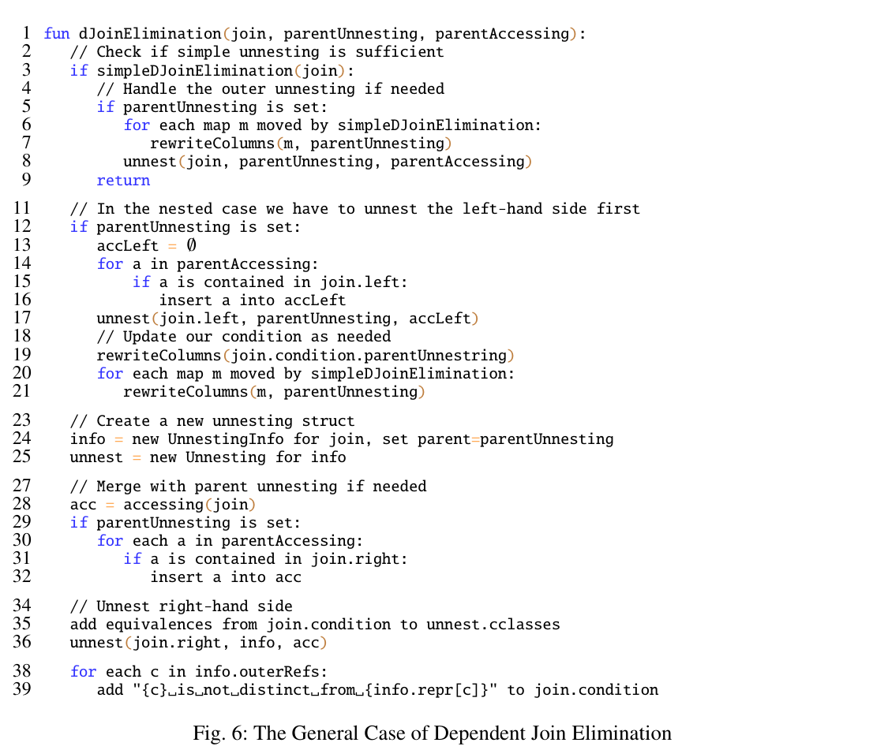
4.7 论文示例的一次完整运行
论文随后用第 2.3 节的例子演示算法。算法从最外层 ⧑1 开始，初始化 outerRef := {T1.a}、cclasses := ∅、repr := ∅，下一步调用 unnest(Γ4, {σ6, σ9})。处理 group by 时，先递归处理输入，之后才会把 outer references 加入 group by。
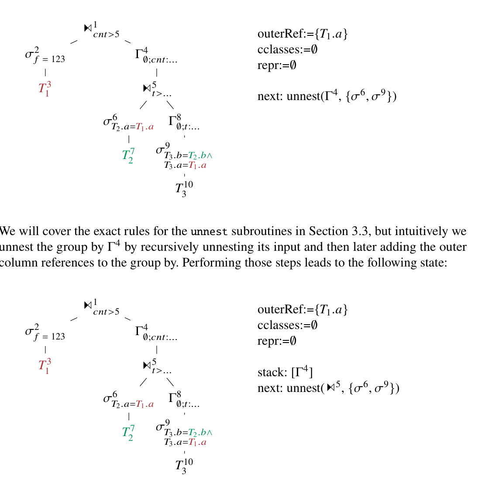
⧑1 启动，先进入 Γ4，随后遇到另一个 dependent join ⧑5。遇到嵌套 dependent join ⧑5 后，simple elimination 仍然不够。论文说，先处理它的左输入。进入 σ6 时，把选择条件 T2.a = T1.a 加入 cclasses，并把 σ6 从 accessing list 中移除。到达 T2 时，访问列表为空，算法有两个选择：加入 D := Πa:=T1.a(σf=123(T1)) 的 join，或者利用等价类把 T1.a 替换为 T2.a。论文为了展示选择空间，假设 σ2 有选择性，于是选择显式加入 join。
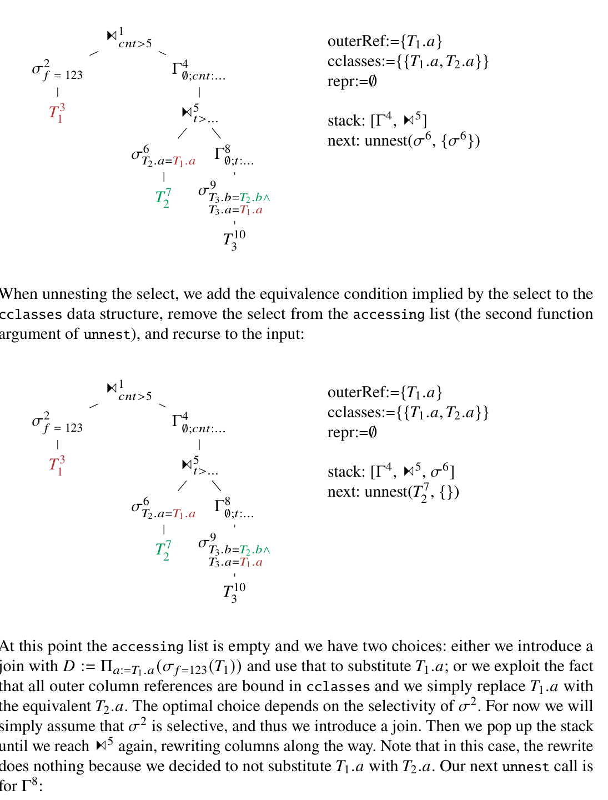
⧑5 左侧时，cclasses 记录 {T1.a,T2.a}；访问列表清空后，在“加入 D”和“列替换”之间做成本选择。之后算法处理另一侧，也就是 Γ8 以下的 σ9 和 T3。这次论文为了同时展示另一种分支，假设优化器选择替换：记录 T1.a → T3.a 和 T2.b → T3.b 到 repr，然后在返回路径上改写所有列引用。最终得到的计划不再把 T1.a 与 T2.b 的完整域交叉放大，而是在同一轮 top-down unnesting 中把嵌套依赖一起处理。
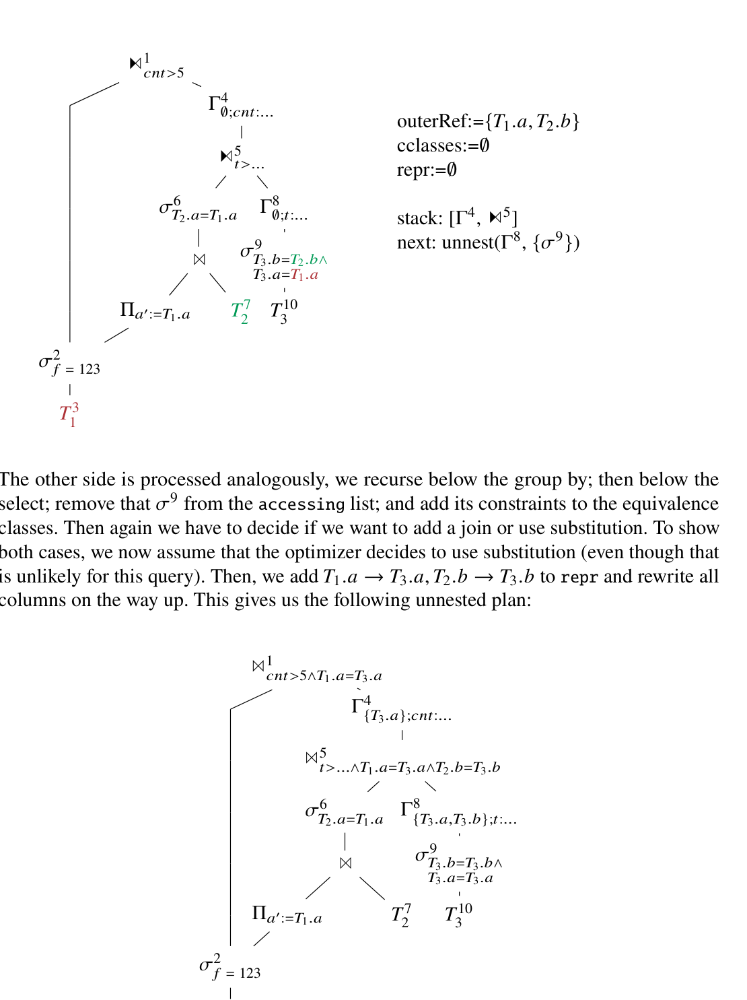
repr 把外层引用改写为 T3 产生的列，最终计划避免了 Section 2.3 中的过大 cross product。4.8 Unnesting Rules：各类算子的处理
第 3.3 节最后给出各算子的规则。论文说这些规则和 2015 的 push down 规则类似，因此只列重点。共同逻辑是：如果 unnest(op, info, accessing) 被调用且 accessing 为空，就停止向下走；此时要么把 info.D join 到当前算子上，要么用 info.cclasses 中的等价列替换所有 outer references。
| 算子 | 论文规则 | 直观作用 |
|---|---|---|
| Selection | 把谓词中的等值条件加入 cclasses，递归处理输入，返回时重写谓词列引用。 |
利用 a=b 这类条件发现可替代的内层列。 |
| Map | 先 unnest 输入，返回时重写 map 产生式中的列引用。 | 保持投影/表达式里的 outer reference 与替换映射一致。 |
| Group by | unnest 输入并重写 group by，然后把 outer references 的代表列加入分组键。 | 保证聚合按每个绑定值分别计算。 |
| Static group by | 若 group by 为空或 grouping sets 包含空组，需要用 outer join 或 group join 保证空输入仍产生正确输出。 | 处理标量聚合在空输入上仍返回一行的 SQL 语义。 |
| Window | 把 outer references 的代表列加入 partition by。 |
让窗口函数按每个绑定值独立计算。 |
| Join | 如果遇到另一个 dependent join，调用主算法处理。否则先把 accessing 分到左右输入：只有访问都在一侧，并且 join 类型不需要输出另一侧 unmatched rows 时，才能只递归一侧；否则必须分别 unnest 两侧。返回时用 rewriteColumnsForJoin 按 join 类型重写条件，并为 outer references 补 is not distinct from 条件；full outer join 这类情况还要按行选择代表列，例如使用 COALESCE。 |
避免把不同层的 D 盲目穿过 dependent join，同时把 inner/left/right/full join 对 unmatched rows 的不同保留规则纳入列替换。 |
2025 第 3 节的核心
Holistic unnesting 不是“换一套完全不同的代数规则”，而是把 2015 的 D 下推思想改成自顶向下的状态化遍历：先标注所有真正访问外层列的位置，再在遍历中携带 outerRefs、cclasses、repr。遇到嵌套 dependent join 时，算法通常会在祖先 join 的消除过程中一起处理；如果祖先过程提前停止，后代 join 再按 top-to-bottom 顺序处理。这样可以避免多个绑定域在中间计划里无意义相乘。
5. 复杂 SQL 构造怎么处理？
2025 论文还补齐了 2015 没有详细覆盖的一些 SQL 构造。这里不需要一开始就掌握证明细节，但要知道优化器为什么不能简单套用普通下推规则。
5.1 Full outer join 条件里的相关子查询
如果 full join 的条件里有子查询，并且子查询同时引用左右两侧，问题会变难：full join 要保留 unmatched rows，而带动态输入的相关 full outer join 语义本身并不良定义。2025 论文给出的处理方式，是构造左右两侧绑定域 DR 与 DS 的组合，为每组绑定计算谓词结果，再用带 is not distinct from 条件的 outer/full outer join 接回两侧，从而明确 NULL 和 unmatched row 的行为。
5.2 WITH RECURSIVE
递归查询不能只把外层引用加到最终结果上。递归体每一轮都必须按外层绑定值分区执行，否则不同绑定的递归状态会混在一起。论文把外层引用加入 recursive CTE 的列，并让 iteratescan 也产生这些列。
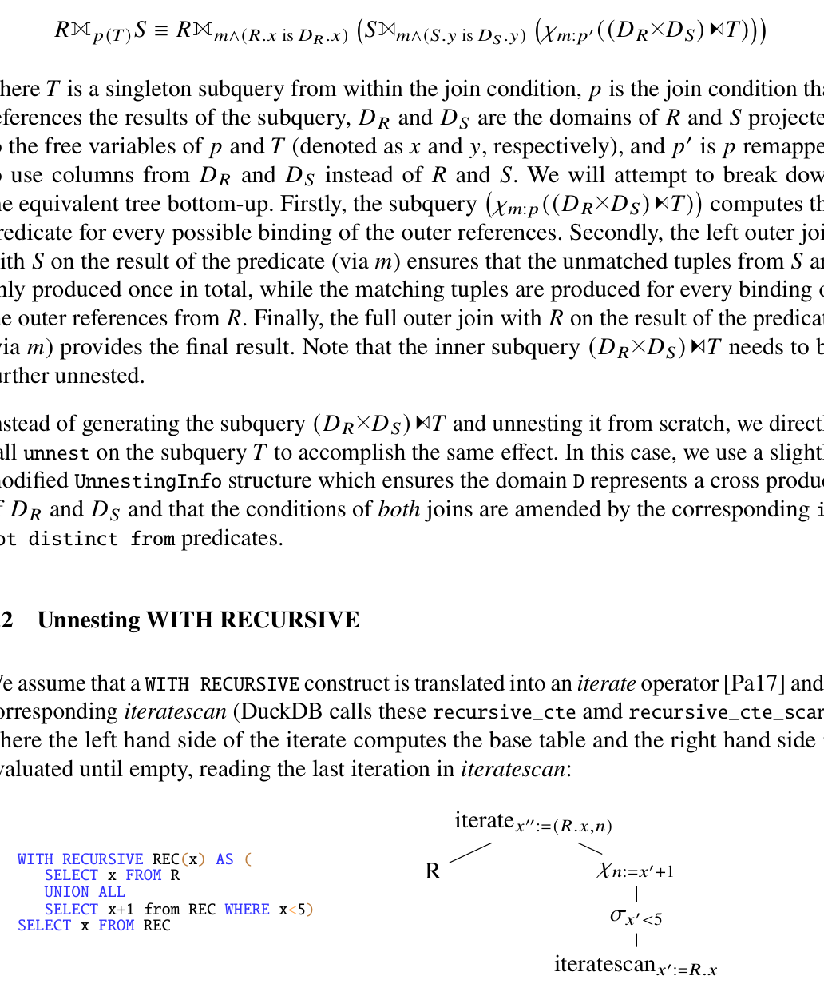
5.3 CTE / DAG 查询计划
CTE 可能让代数表达式从树变成 DAG：同一个子计划被多个地方读取。若天真地沿左右路径分别 unnest，可能重复改写同一个共享子树。论文建议把 DAG 切成若干树，让共享子树形成自己的处理单元，并指定一个共享读触发真正的 unnesting。
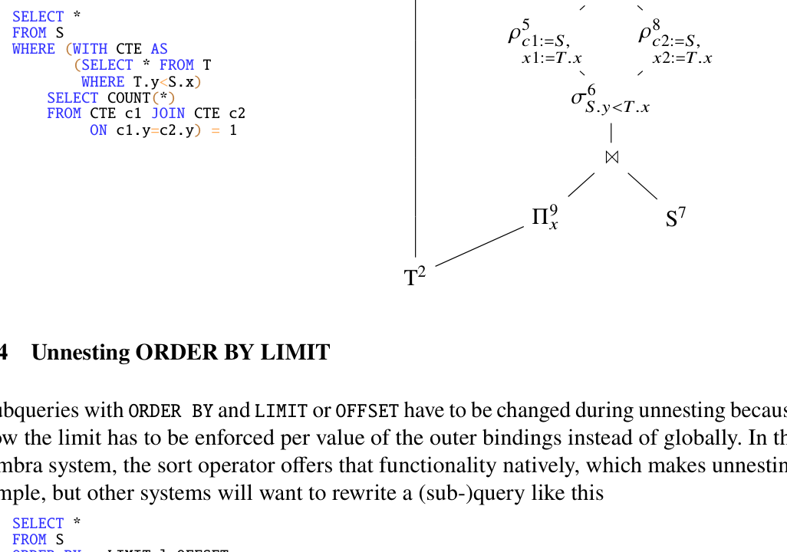
5.4 ORDER BY LIMIT
相关子查询里如果有 ORDER BY ... LIMIT，limit 的语义是“每个外层绑定各取前 N 个”，不是整个内层全局取前 N 个。常见改写是先变成窗口函数：
SELECT *
FROM (
SELECT *,
ROW_NUMBER() OVER (ORDER BY x) AS rn
FROM S
) AS ranked
WHERE rn BETWEEN offset + 1 AND offset + limit;unnesting 时再把外层绑定列加入 PARTITION BY，让 row number 按每个绑定值独立编号。
6. 新手最容易漏掉的语义坑
NULL 比较不是普通等号
论文中 natural D 使用 IS semantics，也就是 NULL 被当成专门值，两个 NULL 可视为相等。若实现时直接使用 SQL 普通 =，可能改变结果。
绑定域 D 去重，不等于整条查询 DISTINCT
D 必须是 duplicate-free，这服务于下推等价式；原查询中的重复行仍要按 SQL 多重集语义保留。
聚合空输入有特殊语义
历史上的 SQL unnesting 规则曾因 COUNT 和空输入出错。2025 论文在 group by static case 中特别提到，空分组聚合需要保证仍产生正确的单行结果，必要时借助 outer join 或 groupjoin。
消掉 D 是成本选择，不是语义必需
用等价列替换 D 可以让计划更干净，但会减少早期过滤。如果 D 的 join 很有选择性，保留它可能更好。
深层嵌套不能只看局部
2015 的局部下推在多数情况下很好，但多层 dependent join 堆叠时，局部最优可能制造巨大的中间域。2025 的 holistic 方法正是为这个场景设计的。
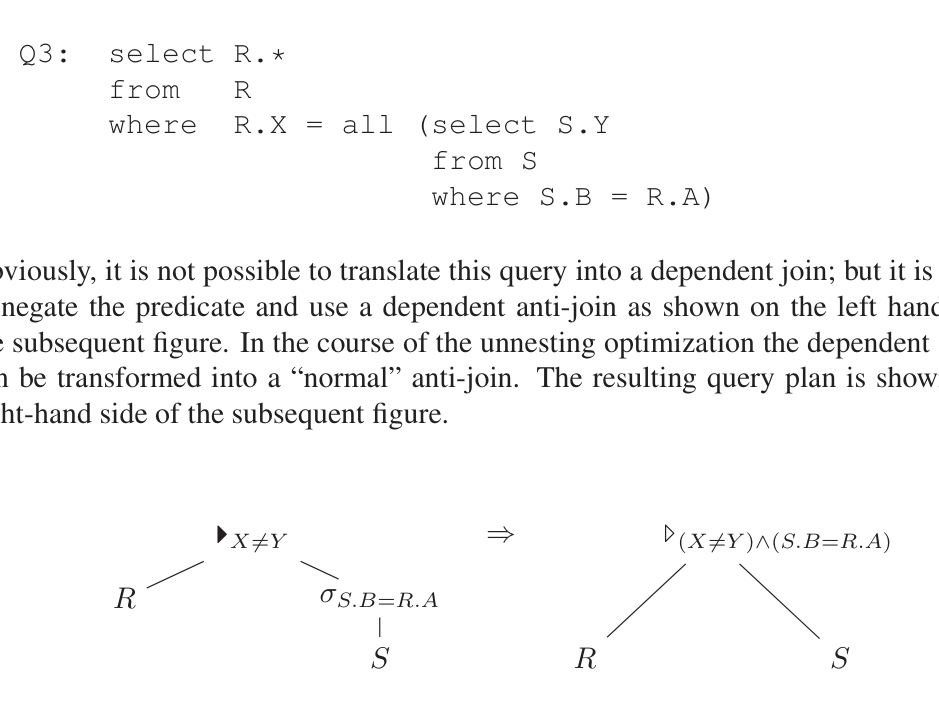
ALL 子句可通过 dependent anti join 表达，再改写为普通 anti join。不同子查询谓词需要不同 join 变体承载语义。7. 推荐学习路线
subquery(outer_column)。D 的定义、下推等价式和替换规则。D，以及成本模型为什么要在“保留 D”和“替换 D”之间选择。8. 一页总结
嵌套 SQL 优化的核心，不是把 SQL 文本改得更漂亮，而是让优化器摆脱“外层每行调用一次内层”的执行形状。2015 论文给出通用代数方法：把相关子查询表达为 dependent join，抽出外层绑定域 D，把 D 下推到内层，最终把 dependent join 替换成普通 join。2025 论文进一步指出，多层相关子查询不能天真地自底向上逐个处理；应该从上到下整体识别和改写相关性，避免多个绑定域制造无用的中间交叉组合。
如果你只记一个心法：相关子查询的优化，就是把“逐行执行的函数调用”重写成“按绑定域分组的一次性关系计算”。